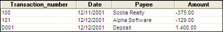

Using Tables
A table is a spreadsheet-style file in which database data is stored. Data in a table is divided into records and fields, or rows and columns. For example, you want to create a table to store information from a checkbook register.
Checkbook Register
|
Transaction Number |
Date |
Payee |
Amount |
|
100 |
12/11/2001 |
Scotia Realty |
-375.00 |
|
101 |
12/12/2001 |
Alpha Software |
-129.00 |
|
D001 |
12/12/2001 |
Deposit |
1,400.00 |
Each row, or record, is used to store information about a check or deposit. For each record, information is broken down into individual fields. One field stores the deposit or check number, one stores the date on which the transaction was made, one stores the amount of the transaction, and so on.
In Alpha Anywhere, you use tables to organize information in the same way. For example, take a look at the same checkbook register in an Alpha Anywhere table:

The Checkbook Register in an Alpha Anywhere Table
All the work you do in Alpha Anywhere derives from tables of information like the one above.
See Also
Selecting the Appropriate View of Your Data, Form View, Browse View